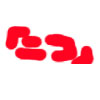

ATENCIÓN
La elección de artículos destacados ha sido trasladada a Proyecto:Destacados. Para realizar propuestas de destacado y votar las propuestas de otros usuarios se ruega el uso de ese proyecto.
Bienvenidos al Olimpo, donde se reúnen los mayores tesoros de La Frikipedia y se votan para su destacación en la portada. Los dioses aquí reunidos tienen el poder de decidir la destacación. Cuando nominéis rezad cinco oraciones en su nombre, es un consejo.
Normas a seguir antes de subir al Olimpo:
- Si usted es el ángel que nos trae los tesoros, acuerdese de indicarlo en negrita al colocarlo en El Altar.
- Ángel, no debes traer artículos que te parezcan graciosos solo por una parte, debe serlo en su totalidad.
- El Angelito debe seguir unos criterios adecuados y objetivos.
- Si usted está a favor de la elevación del artículo a los cielos, indíquelo con un A favor en negrita o cualquier sinónimo.
- Si usted está en contra, indique lo opuesto, es decir, En contra.
- Dioses, ángeles y mortales deben explicar sus razones, tanto en la nominación, como en sus opiniones.
- Un artículo será destacado cuando lo exprese así una clara mayoría.
- Obligatorio firmar, los votos que no consten firmados no contarán y por lo tanto su opinión será ignorada.
El Altar
Nomino me parece que es original, lo único que le falta es un poco más de colaboración y podrá llegar a ser uno de los mejores de la frikipedia.--SeteBurgos 16:38 1 sep 2008 (UTC)
Numino-Jajajja, lo que me he reído.-- 19:02 29 jun 2006 (CEST)
19:02 29 jun 2006 (CEST)
- A favor:Es el mejor.-- 23:50 1 jul 2006 (CEST)
- En contra:Vaya mierda.-- 23:50 1 jul 2006 (CEST)
- En contra:Es un poco soso--SeteBurgos 16:30 1 sep 2008 (UTC)
A favor juas juas (motivo) Ak665
- en contra.Bah... 01:54 1 oct 2006 (CEST)
- en contra.Es una chorrada--SeteBurgos 16:33 1 sep 2008 (UTC)
Nomino:Me hizo reir, y si me hace reir a mí, es que me hace reir..y no estoy loco. 01:54 1 oct 2006 (CEST)
- en contra.Todavía no está maduro--SeteBurgos 16:35 1 sep 2008 (UTC)
Nomino:Buen artículo. 12:27 18 oct 2006 (CEST)
NominoAún sin conocer la ciudad, alguna que otra carcajada... 12:27 18 oct 2006 (CEST)
Nomino Es mi pequeño hijito, ese artículo en el que poco a poco fuí incrustando idas de olla y creo que ya ha crecido lo suficiente (tiene pelos en los huevos y todo) para nominarlo...--CartDestr (discusión) 02:27 14 feb 2007 (CET)
- A favor antes de que el hijo de CartDestr muera
- cibercrank (mi discusión) × Consultas|saludos|tutores|quejas|puntuaciones
 02:06 2 jun 2008 (UTC)
02:06 2 jun 2008 (UTC)
Nomino Creo que es bastante gracioso y largo para ser destacado... aunque sea sobre una pandilla de pervertidos... --Khazike Khashondo 23:40 22 jul 2007 (CEST)
- A favor No lo he leído pero mis poderes para ver el futuro me dicen que es muy weno
- cibercrank (mi discusión) × Consultas|saludos|tutores|quejas|puntuaciones 02:06 2 jun 2008 (UTC)
Nomino Es, con diferencia, el mejor artículo que he leído. --Max Slug 13:13 18 sep 2007 (CEST)
- En contra ya está destacado en portada
 --
--
- cibercrank (mi discusión) × Consultas|saludos|tutores|quejas|puntuaciones 02:06 2 jun 2008 (UTC)
Nomino Es bastante gracioso, y valoro la dificultad que conlleva escribir un artículo de tales características y desarrollar una Why?What?ToggleAnimal - Writer112 17:19 28 nov 2007 (CET)
- A favor LOL
- cibercrank (mi discusión) × Consultas|saludos|tutores|quejas|puntuaciones 02:06 2 jun 2008 (UTC)
Nomino¿Por qué no? Es el artículo con el que más me he reído de toda la Frikipedia...-- Gñá grñap agrojiñauer, gñap 21:51 6 ene 2008 (CET)
- A favor también me ha hecho gracia

- cibercrank (mi discusión) × Consultas|saludos|tutores|quejas|puntuaciones 02:06 2 jun 2008 (UTC)
Nomino: uno de los que mas me ha provocado la risa de los miles de artículos que no me he leído este debe ser el mejor 
- cibercrank (mi discusión) × Consultas|saludos|tutores|quejas|puntuaciones 02:17 2 jun 2008 (UTC)
 De: La Frikipedia, la enciclopedia extremadamente seria.
De: La Frikipedia, la enciclopedia extremadamente seria.